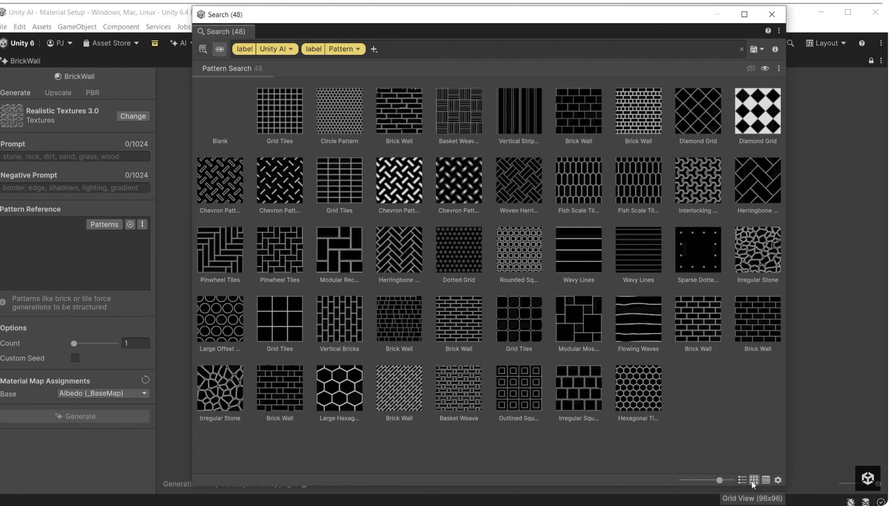

Unity Material Generator：Editor 內從文字／參考圖產生可直接受光的 Tileable PBR Placeholder
Unity AI Material Generator 可在 Unity Editor 內用 prompt 與 optional reference image 建立 tileable PBR material，官方明確把它定位在 prototype／placeholder，而不是直接取代 final art。

Unity ★★★★☆
完整分析
引擎工作流
Material Generator 直接在 Unity Editor 內用文字描述與可選參考圖生成 tileable PBR surface，輸出可像一般材質一樣在場景受光。它屬於 Unity AI Generators，與 Texture2D、Terrain Layer、Sprite、Animation 等生成器共用 editor 端 workflow。
製作價值
官方把它定位成 prototype placeholder 很合理：level/design 團隊可以在 greybox 階段先看到會受真實 lighting 影響的木、石、金屬等表面，不必等待最終材質。這可改善 early art direction 判斷，也避免把最早的純色材質誤當成最終亮度基準。
平台實測
用 20 個 prompt 測 tile seam、normal/roughness 合理性、色彩空間、不同 lighting 下的一致性與重新生成可控度；正式導入要明確標記 AI metadata、placeholder 狀態與 replacement owner，避免 prototype 資產無意間一路進 shipping build。